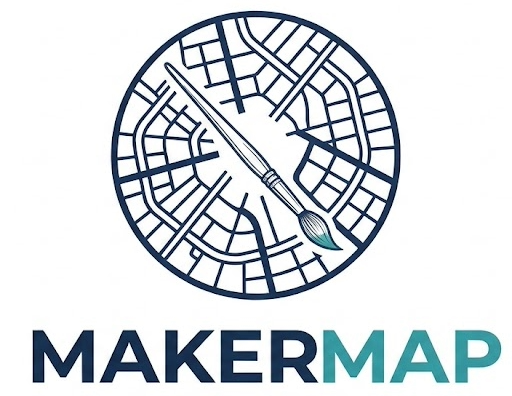

Cada área importada por KMZ ou desenhada no mapa entra aqui como cartão. Arraste entre as colunas para mudar a etapa e clique para preencher valor, contato e observações. Este quadro é guardado sozinho e não depende de Meus Projetos — fechar o mapa ou começar do zero não apaga os cartões.
Este arquivo precisa ser baixado e aberto no navegador (Chrome ou Edge), com internet ativa — o fundo do mapa vem de um servidor externo. Se a mensagem persistir, a rede pode estar bloqueando cdnjs.cloudflare.com ou tiles.openfreemap.org.
Dê um nome ao projeto. Um projeto guarda os KMZ, desenhos e a edição do mapa — o material da apresentação. O quadro de Novos Negócios é guardado separado e sozinho, então não precisa salvar projeto por causa dele.
Cada projeto é um mapa de apresentação: os KMZ usados e a edição aplicada. O quadro de Novos Negócios não entra aqui — ele tem guarda própria.
Escolha uma paleta pré-definida para o fundo do mapa. Você ainda pode ajustar cores individuais na seção Mapa da Edição.